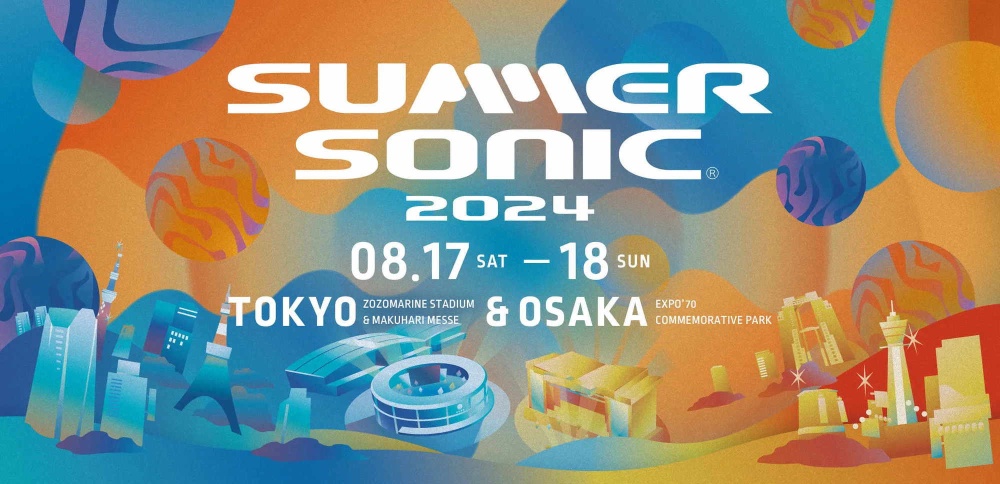
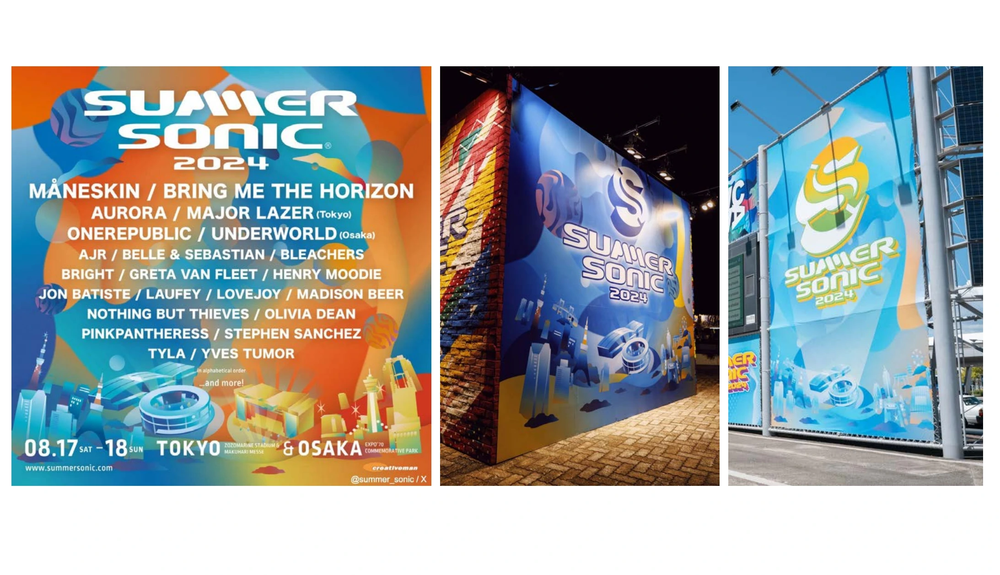

文化
SUMMER SONIC 2024


PROJECT INFORMATION
公式サイトを見る ↗（新しいタブで開く）音楽イベント「SUMMER SONIC 2024」。企画・設計、デザイン、イラストに関わった制作実績です。
01 / 背景とテーマ
輪郭を与える
歴史あるフェスのキービジュアル。東京会場と大阪会場という異なる場所を、ひとつの絵の中で想像できる状態にすることが求められました。
02 / SCHEMAの担当範囲
全体を整える
SCHEMAはメインキービジュアルを担当。IRORI inc. のクリエイティブディレクションのもと、サマソニのキーカラーを活かしながら、両会場のイメージが立ち上がるグラフィックを制作しています。
03 / 取り組みの視点
枠組みをひらく
サマソニの空気感と熱量をどう伝えるかを検討しながらつくりました。SONICMANIAでは線画部分を採用いただいています。ひとつのビジュアルが、複数の会場と複数の時間に対応する形へ。